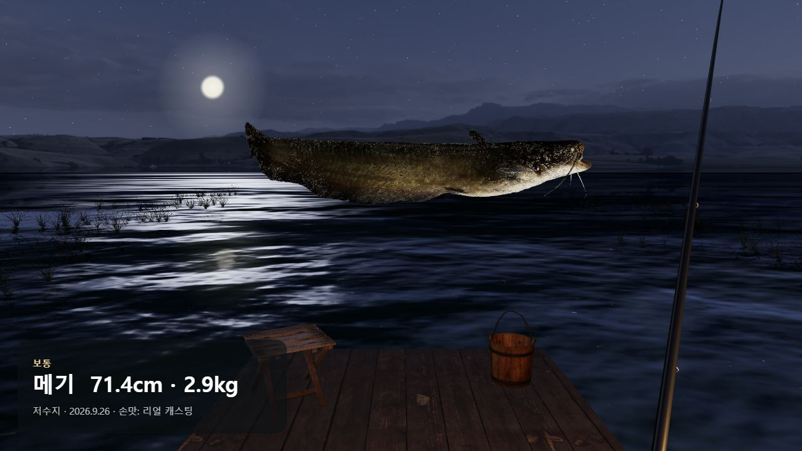
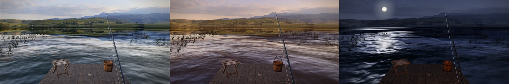

손맛: 리얼 캐스팅 — 웹캠 낚시 게임
2026.09 · 개인 프로젝트저수지·바다·심해·아프리카 강 네 곳에서 46종(문어·대왕오징어·실러캔스까지)을 낚아 도감을 채우는 1인칭 3D 낚시 게임입니다. MediaPipe 포즈 인식을 브라우저 안에서 돌려 영상이 어디로도 나가지 않고, Vercel에 배포해 링크만으로 실행되며 설치형 웹앱(PWA)으로 오프라인에서도 할 수 있습니다. 설계는 Claude와, 구현·배포는 Claude Code와 함께 했고, 저는 기획·플레이 테스트·동작 녹화·방향 전환과 기능을 넣고 뺄지의 결정을 맡았습니다.

83 → 55회
10fps에서 바퀴 세기 방식이 놓친 빠른 릴링 → 속도 방식으로 교체
4종
시뮬레이션으로 찾은 "사실상 못 잡던" 큰 어종 → 재조정
22 → 2.4MB
배경 사진 (물가선 위만 WebP)
33종
실물 3D 스캔·CC 모델로 쓴 물고기 (46종 중)
- 설계서의 미확인 가정은 코드보다 녹화로 먼저 확인 — 13개 녹화에서 카메라 깊이(z)가 실제의 절반 이하로 눌린다는 걸 보고, 캐스팅을 "앞으로 던짐"이 아니라 화면상 "빠르게 아래로 휘두름"으로 판정. 대기 중 몸 움직임의 최고 속도(1.98)와 가장 약한 챔질(4.3) 사이에 기준을 둠.
- "빠르게 감아도 잘 안 감긴다"는 피드백을, 30fps 녹화를 15·10fps로 솎아 재생하는 실험으로 추적 — 프레임이 적으면 원을 직선으로 잘라 재서 짧게 읽힌다는 것을 확인하고, 원의 중심 기준 각도로 호 길이를 되살려 67% → 80%(보통 속도 83% → 97%). 옛 코드에선 실패하는 테스트로 고정.
- 잡는 데 걸리는 시간을 감으로 조정하지 않고 어종별 시뮬레이션으로 확인 — 백상아리·귀상어·참다랑어·귀신고기는 차고 나갈 때 풀리는 줄이 감는 양보다 많아 사실상 잡을 수 없던 상태를 발견. 전설 약 45~50초로 재조정하고, 모든 어종이 90초 안에 잡히는지 테스트로 고정.
- "몸으로 하는 낚시"로 방향을 바꾸며 새 동작마다 녹화부터 — 던지기 직전 0.4초의 손 좌우 이동으로 겨냥(29/29), 손목으로 대를 눕히는 동작은 대기 중 흔들림과 같은 크기라 인식 불가 → 팔째 옮기는 버티기로 교체. 넣어 본 펌핑은 "판단 없는 반복"이라 직접 빼기로 결정.
- 내 얼굴을 한 "인면어"(입질 5%)를 넣기 전에 개인정보 체크리스트부터 — 얼굴은 브라우저 IndexedDB에만, 페이지 CSP로 연결 가능한 곳 제한, 소스에 전송 코드가 없음을 테스트로 검사. 얼굴을 물고기에 붙이는 방식은 플레이 피드백으로 여섯 번 다듬음.
- 마감: 사진 한 장을 셰이더로 보정해 낮·노을·밤(별·달·전자찌)을 만들어 8K 사본 없이 시간대 구현, PWA로 오프라인 재시작을 배포판에서 확인.

상세 시행착오 기록 보기
github.com/kheechan04/sonmat-real-casting (공개 · MIT 라이선스)